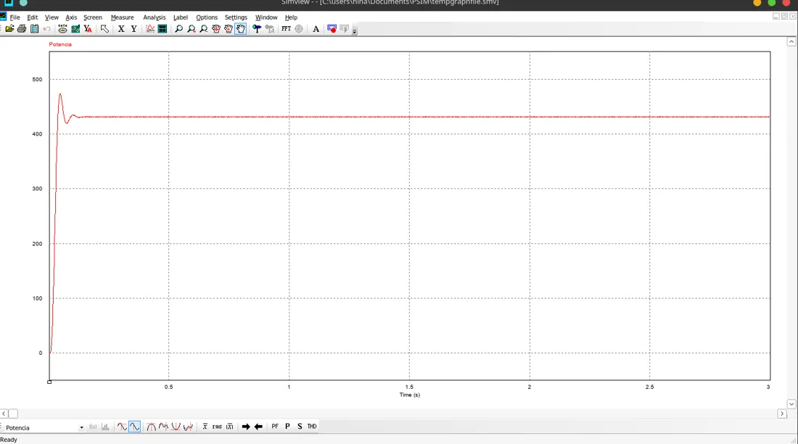

Relatórios técnicos de Engenharia Elétrica
Relatórios de laboratório e materiais de Circuitos Elétricos escritos em LaTeX, com o código-fonte, as figuras e o PDF compilado de cada trabalho.

τ = 100 ms · regime em ~5τ = 500 ms
Na descarga do relatório, Req = R₁ + R₂, então τ dobra.
- Carga e descarga de capacitor em circuito RCCircuitos Elétricos II
- Simulações de circuitos CA no PSIMCircuitos Elétricos II
- Motor de indução tipo gaiola de esquiloensaio com carga
- Lista de exercícios de circuitosduas colunas
- Revisão de Métodos Computacionaisamsmath
- Manual de semáforo com Arduino no Tinkercadprojeto de extensão

